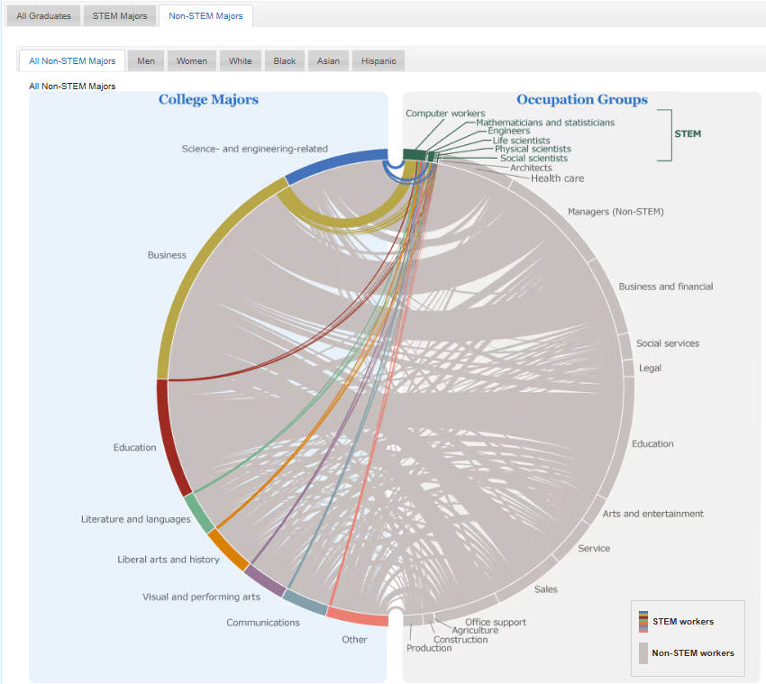
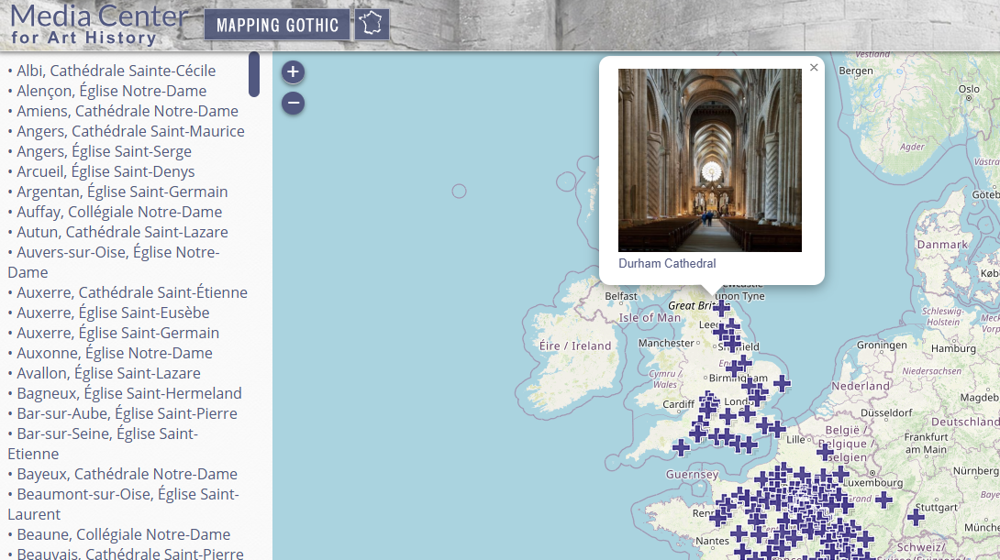
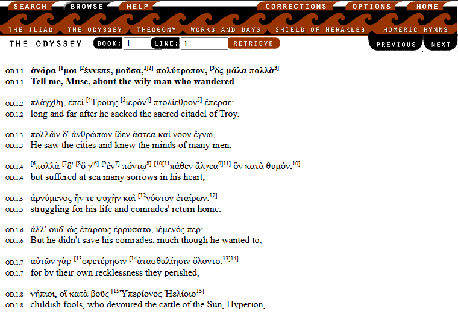

These are a few examples of different digital technologies used in the humanities!
3D Modeling
Reconstructing historical sites or artifacts in digital form
Data Visualization
Graphically representing literary, historical, or cultural data

Visit Example from census.gov
Mapping
Creating interactive geographic representations of historical events or movements

Visit Example from Media Center for Art History by Columbia University
Textual Analysis
Using algorithms to study patterns in literature, historical documents, or social media

Visit Example from the Chicago Homer by NorthWestern University